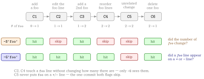

git grepsearches the current working tree. To search history, you needgit log -G <regex>, which matches commits who add or remove a line matching the regex- Use
--name-statusto see which paths each of those commits touched - Use
--diff-filterto keep only additions, modifications, deletions, or renames
# every commit in the last 20 whose patch touches a TODO, with the affected paths
git log -G 'TODO' --format='commit %h' --name-status HEAD~20..HEAD🎯 Goal
🔎 Objective
Suppose that a TODO marker used to exist somewhere in the repository and is now gone. You want to know which commit removed it, and from which file.
git grep cannot answer this
git grep searches a single tree:
# ⚠️ nothing: the string is gone from HEAD
$ git grep 'TODO' git log -G searches history
The default output tells you the commits and nothing about the files:
# ⚠️ which files? unknown
$ git log -G 'TODO' --oneline HEAD~20..HEAD
9f2c1ab Drop the leftover TODO markers
3ad77e0 Add TODO for the retry pathAnd once you add --name-status, the output is correct but not something another program can read:
$ git log -G 'TODO' --name-status HEAD~20..HEAD
commit 9f2c1ab...
Author: ...
Date: ...
Drop the leftover TODO markers
D src/legacy.py
M src/worker.py
...What Really We Want
- One record per commit, with the affected paths nested under it
- A way to say “only the commits that added it” versus “only the ones that deleted it”
- Output that survives a pipe, JSON or YAML, and filenames that do not break the format
Search Options: -S or -G
git log has two flags that search the patch instead of the tree.
| Flag | Selects commits where |
|---|---|
-S <string> |
Look for differences that change the number of occurrences of the specified string |
-G <regex> |
Display commits where lines matching the regex were added or deleted in diff |
The practical difference: a commit that moves a line containing TODO from one file to another changes no occurrence count, so -S skips it, while -G reports it because both a + line and a - line matched.
-G matches the diff, so it never sees an unchanged line
If a file contains TODO but a commit did not touch that line, no -G search will return that commit. -G answers “which commit changed a matching line”, never “which commit had a matching line in its tree”. For the latter you need git grep 'TODO' <commit>, one commit at a time.
Example 1 git log -S vs git log -G
Build a sandbox whose six commits each move the occurrence count of foo differently:
# create sandbox repository
mkdir sandbox-git-log
cd sandbox-git-log
git init
# C1: created with one "foo" -> count 0 -> 1
cat > app.py <<'EOF'
def main():
x = foo(1)
return x
EOF
git add app.py && git commit -m"C1: add foo (count 0 -> 1)"
# C2: rewrite the line containing foo, but the count stays 1
cat > app.py <<'EOF'
def main():
y = foo(2)
return y
EOF
git commit -am"C2: modify the foo line (count 1 -> 1)"
# C3: add one more line containing foo -> 1 -> 2
cat > app.py <<'EOF'
def main():
y = foo(2)
z = foo(3)
return y + z
EOF
git commit -am"C3: add another foo (count 1 -> 2)"
# C4: only reorder the foo lines -> 2 -> 2
cat > app.py <<'EOF'
def main():
z = foo(3)
y = foo(2)
return y + z
EOF
git commit -am"C4: reorder foo lines (count 2 -> 2)"
# C5: a change unrelated to foo -> foo never appears in the diff
cat > app.py <<'EOF'
def main():
z = foo(3)
y = foo(2)
return y + z
def helper():
return 42
EOF
git commit -am"C5: unrelated change (no foo in diff)"
# C6: delete one foo -> 2 -> 1
cat > app.py <<'EOF'
def main():
y = foo(2)
return y
def helper():
return 42
EOF
git commit -am"C6: remove one foo (count 2 -> 1)"What the setup builds, and what each flag is asked to look at:

Now ask the two questions:
echo "===== all commits ====="
git log --oneline --reverse
echo
echo "===== git log -S'foo' (only commits where the count changed) ====="
git log --oneline --reverse -S'foo'
echo
echo "===== git log -G'foo' (commits whose diff added/removed a foo line) ====="
git log --oneline --reverse -G'foo'
echo
echo "===== note: --pickaxe-regex keeps the \"count\" semantics for -S ====="
git log --oneline --reverse -S'foo\(.\)' --pickaxe-regexThen
===== all commits =====
4fa154f C1: add foo (count 0 -> 1)
abc2106 C2: modify the foo line (count 1 -> 1)
0811d13 C3: add another foo (count 1 -> 2)
ff3428a C4: reorder foo lines (count 2 -> 2)
6bcca99 C5: unrelated change (no foo in diff)
31b4874 (HEAD -> main) C6: remove one foo (count 2 -> 1)
===== git log -S'foo' (only commits where the count changed) =====
4fa154f C1: add foo (count 0 -> 1)
0811d13 C3: add another foo (count 1 -> 2)
31b4874 (HEAD -> main) C6: remove one foo (count 2 -> 1)
===== git log -G'foo' (commits whose diff added/removed a foo line) =====
4fa154f C1: add foo (count 0 -> 1)
abc2106 C2: modify the foo line (count 1 -> 1)
0811d13 C3: add another foo (count 1 -> 2)
ff3428a C4: reorder foo lines (count 2 -> 2)
31b4874 (HEAD -> main) C6: remove one foo (count 2 -> 1)
===== note: --pickaxe-regex keeps the "count" semantics for -S =====
4fa154f C1: add foo (count 0 -> 1)
0811d13 C3: add another foo (count 1 -> 2)
31b4874 (HEAD -> main) C6: remove one foo (count 2 -> 1)C2 and C4 are the whole point of the sandbox: both touch a foo line, neither changes how many foo there are, so only -G reports them. C5 is the mirror case — it is the one commit both flags skip, because foo never appears on a + or - line.
Why git log -G alone is still not enough
The default output drops the files
-G gets you the right commits, but tells you nothing about the paths inside them:
# ⚠️ which files? unknown
$ git log -G 'TODO' --oneline HEAD~20..HEAD
9f2c1ab Drop the leftover TODO markers
3ad77e0 Add TODO for the retry pathWhat Really We Want
- One record per commit, with the affected paths nested under it
- A way to say “only the commits that added it” versus “only the ones that deleted it”
- Output that survives a pipe, JSON or YAML, and filenames that do not break the format
Solution: git log -G with --name-status
Key Takeaways
-G <regex>picks the commits--name-statusprints the paths each selected commit changed, one per line, prefixed by a status letter--format='commit %h'replaces the multi-line header with a single parseable line
git log -G '<regex>' [--regexp-ignore-case] [--diff-filter=AM] \
--format='commit %h' --name-status \
<revision-range> -- '<pathspec>'Everything after -- is a pathspec, so the history search composes with Git-native path matching, magic signatures included:
$ git log -G 'TODO' --format='commit %h' --name-status HEAD~20..HEAD -- '*.qmd'
$ git log -G 'TODO' --format='commit %h' --name-status HEAD~20..HEAD -- ':(glob)**/*.qmd'Example 2
Back in the sandbox from the previous example, %n inside --format lets you add fields on their own lines — here the author date with %ai — while keeping one commit per record:
$ git log -G 'foo' --format='commit %h%n%ai' --name-status HEAD
commit 31b4874
2026-09-08 17:47:50 +0900
M app.py
commit ff3428a
2026-09-08 17:46:51 +0900
M app.py
commit 0811d13
2026-09-08 17:45:18 +0900
M app.py
commit abc2106
2026-09-08 17:44:46 +0900
M app.py
commit 4fa154f
2026-09-08 17:44:04 +0900
A app.pyTwo things to read off this output:
- The five commits are exactly the
-Ghits from the previous example, newest first, andC5is absent —--name-statusnever resurrects a commit that-Gdid not select app.pyisAin the oldest commit andMin every later one, which is the status letter--diff-filtermatches on
Narrowing by change type with --diff-filter
-G selects commits; --diff-filter selects paths within those commits by status letter. Uppercase letters include, lowercase letters exclude:
| Filter | Result |
|---|---|
A |
Added paths only |
M |
Modified paths only |
D |
Deleted paths only |
R |
Renamed paths only |
C |
Copied paths only |
AM |
Added or modified paths |
ad |
Exclude added and deleted paths |
AM* |
If a commit contains an added or modified path, select all changed paths in that commit |
T, U, X, and B are accepted as well. The * is not a wildcard: it switches Git to all-or-none behaviour, which is why it is only ever useful combined with other letters, as in AM*.
--diff-filter=A
The two questions this post opened with map straight onto two filters:
- when was this file first added with the marker →
--diff-filter=A - when was it deleted →
--diff-filter=D
Without a filter you get both, plus every modification in between.
Solution: wrapping it in git-grep-commit
The git log -G one-liner is correct but long, and its output still needs parsing before anything else can consume it. git-grep-commit names the pipeline once and groups the affected paths by commit, in a table, JSON, or YAML.
Revision ranges and every path after -- are passed straight through to Git, magic pathspecs included, so nothing you already know stops working.
▶ Usage
git-grep-commit [options] <regex> [<revision> ...] [-- <pathspec> ...]▶ Options
| Option | Effect |
|---|---|
-f, --format <format> |
Output as table (default), json, or yml; yaml is accepted as an alias for yml |
-i, --ignore-case |
Match the patch regex case-insensitively |
--diff-filter <filter> |
Apply Git’s native diff filter. Both --diff-filter=AM and --diff-filter AM are accepted |
--long-date |
Display the author date in ISO 8601 format (%ai). |
--short-date |
Display the author date as YYYY-MM-DD (%as). |
-h, --help |
Show the help message |
Example 3 Reading the two output formats
Ask for every commit whose patch touched foo, and the default table format answers it in one row per changed path:
$ git grep-commit 'foo'
COMMIT STATUS PATH
-----------------------
31b4874 M app.py
ff3428a M app.py
0811d13 M app.py
abc2106 M app.py
4fa154f A app.pyCommits are listed newest first, exactly as git log orders them, so the last row is the oldest. That bottom row is the interesting one: 4fa154f is the only A, so it is the commit that added app.py with foo already in it. Everything above is a later M that added or removed a foo line again. Reading upwards is therefore reading the marker’s history forwards, and --diff-filter=A would have printed that last row alone.
The same query as YAML keeps the paths grouped under their commit instead of repeating the commit on every row:
$ git grep-commit 'foo' -f yml
- commit: "31b4874"
files:
- status: "M"
path: "app.py"
- commit: "ff3428a"
files:
- status: "M"
path: "app.py"
- commit: "0811d13"
files:
- status: "M"
path: "app.py"
- commit: "abc2106"
files:
- status: "M"
path: "app.py"
- commit: "4fa154f"
files:
- status: "A"
path: "app.py"Here each commit touched a single file, so files never holds more than one entry and the two formats carry the same information. The nesting earns its keep once a commit changes several paths: the table repeats the commit hash on each line and leaves the grouping for you to reconstruct, while -f yml (or -f json) hands a downstream yq/jq the commit and its file list as one object.
* and AM* in the shell
--diff-filter='*' and --diff-filter='AM*' must be quoted. Unquoted, the shell expands * against the files in the current directory before Git ever sees it.
📘 Glossary
- def: git log -G
description: |
Selects commits whose patch contains an added or removed line
matching the regex. Searches the **diff**, not the tree, so an
unchanged matching line never selects a commit.
- def: git log -S
description: |
The "pickaxe". Selects commits where the number of occurrences of
the string changed, which is the narrower question of when a string
was introduced or removed. Add `--pickaxe-regex` to treat the
argument as a regex rather than a literal string.
- def: --diff-filter
description: |
Filters the paths reported for a commit by status letter — `A`dded,
`M`odified, `D`eleted, `R`enamed, `C`opied, and others. Uppercase
includes, lowercase excludes, and `*` switches to all-or-none
selection for the whole commit.
- def: --name-status
description: |
Prints the paths a commit changed, one per line, each prefixed by
its status letter. Rename and copy lines carry both the old and the
new path.